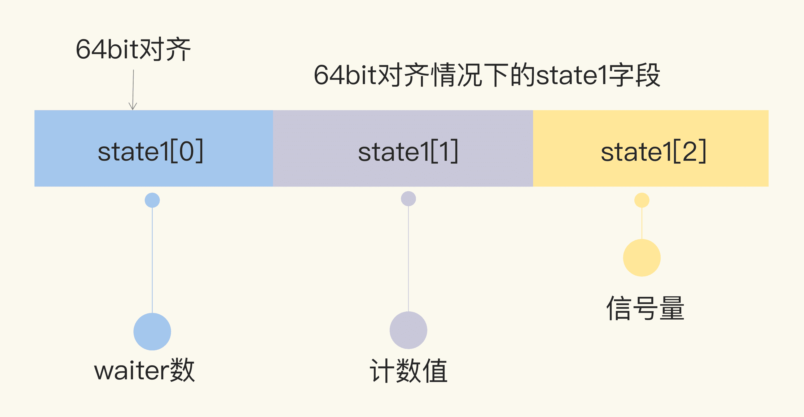
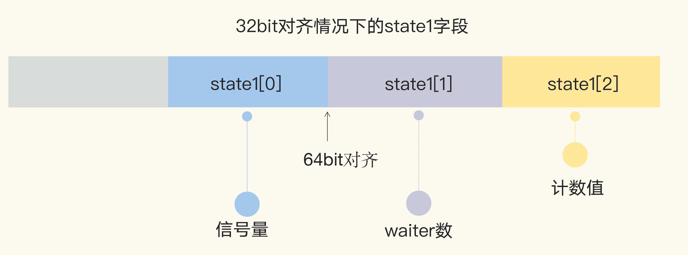

06 | WaitGroup：協同等待，任務編排利器
你好，我是鳥窩。
WaitGroup，我們以前都多多少少學習過，或者是使用過。其實，WaitGroup 很簡單，就是 package sync 用來做任務編排的一個併發原語。它要解決的就是併發 - 等待的問題：現在有一個 goroutine A 在檢查點（checkpoint）等待一組 goroutine 全部完成，如果在執行任務的這些 goroutine 還沒全部完成，那麼 goroutine A 就會阻塞在檢查點，直到所有 goroutine 都完成後才能繼續執行。
我們來看一個使用 WaitGroup 的場景。
比如，我們要完成一個大的任務，需要使用並行的 goroutine 執行三個小任務，只有這三個小任務都完成，我們才能去執行後面的任務。如果通過輪詢的方式定時詢問三個小任務是否完成，會存在兩個問題：一是，性能比較低，因為三個小任務可能早就完成了，卻要等很長時間才被輪詢到；二是，會有很多無謂的輪詢，空耗 CPU 資源。
那麼，這個時候使用 WaitGroup 併發原語就比較有效了，它可以阻塞等待的 goroutine。等到三個小任務都完成了，再即時喚醒它們。
其實，很多操作系統和編程語言都提供了類似的併發原語。比如，Linux 中的 barrier、Pthread（POSIX 線程）中的 barrier、C++ 中的 std::barrier、Java 中的 CyclicBarrier 和 CountDownLatch 等。由此可見，這個併發原語還是一個非常基礎的併發類型。所以，我們要認真掌握今天的內容，這樣就可以舉一反三，輕鬆應對其他場景下的需求了。
我們還是從 WaitGroup 的基本用法學起吧。
WaitGroup 的基本用法
Go 標準庫中的 WaitGroup 提供了三個方法，保持了 Go 簡潔的風格。
func (wg *WaitGroup) Add(delta int)
func (wg *WaitGroup) Done()
func (wg *WaitGroup) Wait()
我們分別看下這三個方法：
- Add，用來設置 WaitGroup 的計數值；
- Done，用來將 WaitGroup 的計數值減 1，其實就是調用了 Add(-1)；
- Wait，調用這個方法的 goroutine 會一直阻塞，直到 WaitGroup 的計數值變為 0。
接下來，我們通過一個使用 WaitGroup 的例子，來看下 Add、Done、Wait 方法的基本用法。
在這個例子中，我們使用了以前實現的計數器 struct。我們啟動了 10 個 worker，分別對計數值加一，10 個 worker 都完成後，我們期望輸出計數器的值。
// 線程安全的計數器
type Counter struct {
mu sync.Mutex
count uint64
}
// 對計數值加一
func (c *Counter) Incr() {
c.mu.Lock()
c.count++
c.mu.Unlock()
}
// 獲取當前的計數值
func (c *Counter) Count() uint64 {
c.mu.Lock()
defer c.mu.Unlock()
return c.count
}
// sleep 1秒，然後計數值加1
func worker(c *Counter, wg *sync.WaitGroup) {
defer wg.Done()
time.Sleep(time.Second)
c.Incr()
}
func main() {
var counter Counter
var wg sync.WaitGroup
wg.Add(10) // WaitGroup的值設置為10
for i := 0; i < 10; i++ { // 啟動10個goroutine執行加1任務
go worker(&counter, &wg)
}
// 檢查點，等待goroutine都完成任務
wg.Wait()
// 輸出當前計數器的值
fmt.Println(counter.Count())
}
我們一起來分析下這段代碼。
- 第 28 行，聲明瞭一個 WaitGroup 變量，初始值為零。
- 第 29 行，把 WaitGroup 變量的計數值設置為 10。因為我們需要編排 10 個 goroutine(worker) 去執行任務，並且等待 goroutine 完成。
- 第 35 行，調用 Wait 方法阻塞等待。
- 第 32 行，啟動了 goroutine，並把我們定義的 WaitGroup 指針當作參數傳遞進去。goroutine 完成後，需要調用 Done 方法，把 WaitGroup 的計數值減 1。等 10 個 goroutine 都調用了 Done 方法後，WaitGroup 的計數值降為 0，這時，第 35 行的主 goroutine 就不再阻塞，會繼續執行，在第 37 行輸出計數值。
這就是我們使用 WaitGroup 編排這類任務的常用方式。而“這類任務”指的就是，需要啟動多個 goroutine 執行任務，主 goroutine 需要等待子 goroutine 都完成後才繼續執行。
熟悉了 WaitGroup 的基本用法後，我們再看看它具體是如何實現的吧。
WaitGroup 的實現
首先，我們看看 WaitGroup 的數據結構。它包括了一個 noCopy 的輔助字段，一個 state1 記錄 WaitGroup 狀態的數組。
- noCopy 的輔助字段，主要就是輔助 vet 工具檢查是否通過 copy 賦值這個 WaitGroup 實例。我會在後面和你詳細分析這個字段；
- state1，一個具有複合意義的字段，包含 WaitGroup 的計數、阻塞在檢查點的 waiter 數和信號量。
WaitGroup 的數據結構定義以及 state 信息的獲取方法如下：
type WaitGroup struct {
// 避免複製使用的一個技巧，可以告訴vet工具違反了複製使用的規則
noCopy noCopy
// 64bit(8bytes)的值分成兩段，高32bit是計數值，低32bit是waiter的計數
// 另外32bit是用作信號量的
// 因為64bit值的原子操作需要64bit對齊，但是32bit編譯器不支持，所以數組中的元素在不同的架構中不一樣，具體處理看下面的方法
// 總之，會找到對齊的那64bit作為state，其餘的32bit做信號量
state1 [3]uint32
}
// 得到state的地址和信號量的地址
func (wg *WaitGroup) state() (statep *uint64, semap *uint32) {
if uintptr(unsafe.Pointer(&wg.state1))%8 == 0 {
// 如果地址是64bit對齊的，數組前兩個元素做state，後一個元素做信號量
return (*uint64)(unsafe.Pointer(&wg.state1)), &wg.state1[2]
} else {
// 如果地址是32bit對齊的，數組後兩個元素用來做state，它可以用來做64bit的原子操作，第一個元素32bit用來做信號量
return (*uint64)(unsafe.Pointer(&wg.state1[1])), &wg.state1[0]
}
}
因為對 64 位整數的原子操作要求整數的地址是 64 位對齊的，所以針對 64 位和 32 位環境的 state 字段的組成是不一樣的。
在 64 位環境下，state1 的第一個元素是 waiter 數，第二個元素是 WaitGroup 的計數值，第三個元素是信號量。

在 32 位環境下，如果 state1 不是 64 位對齊的地址，那麼 state1 的第一個元素是信號量，後兩個元素分別是 waiter 數和計數值。

然後，我們繼續深入源碼，看一下 Add、Done 和 Wait 這三個方法的實現。
在查看這部分源碼實現時，我們會發現，除了這些方法本身的實現外，還會有一些額外的代碼，主要是 race 檢查和異常檢查的代碼。其中，有幾個檢查非常關鍵，如果檢查不通過，會出現 panic，這部分內容我會在下一小節分析 WaitGroup 的錯誤使用場景時介紹。現在，我們先專注在 Add、Wait 和 Done 本身的實現代碼上。
我先為你梳理下 Add 方法的邏輯。Add 方法主要操作的是 state 的計數部分。你可以為計數值增加一個 delta 值，內部通過原子操作把這個值加到計數值上。需要注意的是，這個 delta 也可以是個負數，相當於為計數值減去一個值，Done 方法內部其實就是通過 Add(-1) 實現的。
它的實現代碼如下：
func (wg *WaitGroup) Add(delta int) {
statep, semap := wg.state()
// 高32bit是計數值v，所以把delta左移32，增加到計數上
state := atomic.AddUint64(statep, uint64(delta)<<32)
v := int32(state >> 32) // 當前計數值
w := uint32(state) // waiter count
if v > 0 || w == 0 {
return
}
// 如果計數值v為0並且waiter的數量w不為0，那麼state的值就是waiter的數量
// 將waiter的數量設置為0，因為計數值v也是0,所以它們倆的組合*statep直接設置為0即可。此時需要並喚醒所有的waiter
*statep = 0
for ; w != 0; w-- {
runtime_Semrelease(semap, false, 0)
}
}
// Done方法實際就是計數器減1
func (wg *WaitGroup) Done() {
wg.Add(-1)
}
Wait 方法的實現邏輯是：不斷檢查 state 的值。如果其中的計數值變為了 0，那麼說明所有的任務已完成，調用者不必再等待，直接返回。如果計數值大於 0，說明此時還有任務沒完成，那麼調用者就變成了等待者，需要加入 waiter 隊列，並且阻塞住自己。
其主幹實現代碼如下：
func (wg *WaitGroup) Wait() {
statep, semap := wg.state()
for {
state := atomic.LoadUint64(statep)
v := int32(state >> 32) // 當前計數值
w := uint32(state) // waiter的數量
if v == 0 {
// 如果計數值為0, 調用這個方法的goroutine不必再等待，繼續執行它後面的邏輯即可
return
}
// 否則把waiter數量加1。期間可能有併發調用Wait的情況，所以最外層使用了一個for循環
if atomic.CompareAndSwapUint64(statep, state, state+1) {
// 阻塞休眠等待
runtime_Semacquire(semap)
// 被喚醒，不再阻塞，返回
return
}
}
}使用 WaitGroup 時的常見錯誤在分析 WaitGroup 的 Add、Done 和 Wait 方法的實現的時候，為避免干擾，我刪除了異常檢查的代碼。但是，這些異常檢查非常有用。
我們在開發的時候，經常會遇見或看到誤用 WaitGroup 的場景，究其原因就是沒有弄明白這些檢查的邏輯。所以接下來，我們就通過幾個小例子，一起學習下在開發時絕對要避免的 3 個問題。
常見問題一：計數器設置為負值
WaitGroup 的計數器的值必須大於等於 0。我們在更改這個計數值的時候，WaitGroup 會先做檢查，如果計數值被設置為負數，就會導致 panic。
一般情況下，有兩種方法會導致計數器設置為負數。
第一種方法是：調用 Add 的時候傳遞一個負數。如果你能保證當前的計數器加上這個負數後還是大於等於 0 的話，也沒有問題，否則就會導致 panic。
比如下面這段代碼，計數器的初始值為 10，當第一次傳入 -10 的時候，計數值被設置為 0，不會有啥問題。但是，再緊接著傳入 -1 以後，計數值就被設置為負數了，程序就會出現 panic。
func main() {
var wg sync.WaitGroup
wg.Add(10)
wg.Add(-10)//將-10作為參數調用Add，計數值被設置為0
wg.Add(-1)//將-1作為參數調用Add，如果加上-1計數值就會變為負數。這是不對的，所以會觸發panic
}
第二個方法是：調用 Done 方法的次數過多，超過了 WaitGroup 的計數值。
使用 WaitGroup 的正確姿勢是，預先確定好 WaitGroup 的計數值，然後調用相同次數的 Done 完成相應的任務。比如，在 WaitGroup 變量聲明之後，就立即設置它的計數值，或者在 goroutine 啟動之前增加 1，然後在 goroutine 中調用 Done。
如果你沒有遵循這些規則，就很可能會導致 Done 方法調用的次數和計數值不一致，進而造成死鎖（Done 調用次數比計數值少）或者 panic（Done 調用次數比計數值多）。
比如下面這個例子中，多調用了一次 Done 方法後，會導致計數值為負，所以程序運行到這一行會出現 panic。
func main() {
var wg sync.WaitGroup
wg.Add(1)
wg.Done()
wg.Done()
}常見問題二：不期望的 Add 時機在使用 WaitGroup 的時候，你一定要遵循的原則就是，等所有的 Add 方法調用之後再調用 Wait，否則就可能導致 panic 或者不期望的結果。
我們構造這樣一個場景：只有部分的 Add/Done 執行完後，Wait 就返回。我們看一個例子：啟動四個 goroutine，每個 goroutine 內部調用 Add(1) 然後調用 Done()，主 goroutine 調用 Wait 等待任務完成。
func main() {
var wg sync.WaitGroup
go dosomething(100, &wg) // 啟動第一個goroutine
go dosomething(110, &wg) // 啟動第二個goroutine
go dosomething(120, &wg) // 啟動第三個goroutine
go dosomething(130, &wg) // 啟動第四個goroutine
wg.Wait() // 主goroutine等待完成
fmt.Println("Done")
}
func dosomething(millisecs time.Duration, wg *sync.WaitGroup) {
duration := millisecs * time.Millisecond
time.Sleep(duration) // 故意sleep一段時間
wg.Add(1)
fmt.Println("後臺執行, duration:", duration)
wg.Done()
}
在這個例子中，我們原本設想的是，等四個 goroutine 都執行完畢後輸出 Done 的信息，但是它的錯誤之處在於，將 WaitGroup.Add 方法的調用放在了子 gorotuine 中。等主 goorutine 調用 Wait 的時候，因為四個任務 goroutine 一開始都休眠，所以可能 WaitGroup 的 Add 方法還沒有被調用，WaitGroup 的計數還是 0，所以它並沒有等待四個子 goroutine 執行完畢才繼續執行，而是立刻執行了下一步。
導致這個錯誤的原因是，沒有遵循先完成所有的 Add 之後才 Wait。要解決這個問題，一個方法是，預先設置計數值：
func main() {
var wg sync.WaitGroup
wg.Add(4) // 預先設定WaitGroup的計數值
go dosomething(100, &wg) // 啟動第一個goroutine
go dosomething(110, &wg) // 啟動第二個goroutine
go dosomething(120, &wg) // 啟動第三個goroutine
go dosomething(130, &wg) // 啟動第四個goroutine
wg.Wait() // 主goroutine等待
fmt.Println("Done")
}
func dosomething(millisecs time.Duration, wg *sync.WaitGroup) {
duration := millisecs * time.Millisecond
time.Sleep(duration)
fmt.Println("後臺執行, duration:", duration)
wg.Done()
}
另一種方法是在啟動子 goroutine 之前才調用 Add：
func main() {
var wg sync.WaitGroup
dosomething(100, &wg) // 調用方法，把計數值加1，並啟動任務goroutine
dosomething(110, &wg) // 調用方法，把計數值加1，並啟動任務goroutine
dosomething(120, &wg) // 調用方法，把計數值加1，並啟動任務goroutine
dosomething(130, &wg) // 調用方法，把計數值加1，並啟動任務goroutine
wg.Wait() // 主goroutine等待，代碼邏輯保證了四次Add(1)都已經執行完了
fmt.Println("Done")
}
func dosomething(millisecs time.Duration, wg *sync.WaitGroup) {
wg.Add(1) // 計數值加1，再啟動goroutine
go func() {
duration := millisecs * time.Millisecond
time.Sleep(duration)
fmt.Println("後臺執行, duration:", duration)
wg.Done()
}()
}
可見，無論是怎麼修復，都要保證所有的 Add 方法是在 Wait 方法之前被調用的。
常見問題三：前一個 Wait 還沒結束就重用 WaitGroup
“前一個 Wait 還沒結束就重用 WaitGroup”這一點似乎不太好理解，我借用田徑比賽的例子和你解釋下吧。在田徑比賽的百米小組賽中，需要把選手分成幾組，一組選手比賽完之後，就可以進行下一組了。為了確保兩組比賽時間上沒有衝突，我們在模型化這個場景的時候，可以使用 WaitGroup。
WaitGroup 等一組比賽的所有選手都跑完後 5 分鐘，才開始下一組比賽。下一組比賽還可以使用這個 WaitGroup 來控制，因為 WaitGroup 是可以重用的。只要 WaitGroup 的計數值恢復到零值的狀態，那麼它就可以被看作是新創建的 WaitGroup，被重複使用。
但是，如果我們在 WaitGroup 的計數值還沒有恢復到零值的時候就重用，就會導致程序 panic。我們看一個例子，初始設置 WaitGroup 的計數值為 1，啟動一個 goroutine 先調用 Done 方法，接著就調用 Add 方法，Add 方法有可能和主 goroutine 併發執行。
func main() {
var wg sync.WaitGroup
wg.Add(1)
go func() {
time.Sleep(time.Millisecond)
wg.Done() // 計數器減1
wg.Add(1) // 計數值加1
}()
wg.Wait() // 主goroutine等待，有可能和第7行併發執行
}
在這個例子中，第 6 行雖然讓 WaitGroup 的計數恢復到 0，但是因為第 9 行有個 waiter 在等待，如果等待 Wait 的 goroutine，剛被喚醒就和 Add 調用（第 7 行）有併發執行的衝突，所以就會出現 panic。
總結一下：WaitGroup 雖然可以重用，但是是有一個前提的，那就是必須等到上一輪的 Wait 完成之後，才能重用 WaitGroup 執行下一輪的 Add/Wait，如果你在 Wait 還沒執行完的時候就調用下一輪 Add 方法，就有可能出現 panic。
noCopy：輔助 vet 檢查
我們剛剛在學習 WaitGroup 的數據結構時，提到了裡面有一個 noCopy 字段。你還記得它的作用嗎？其實，它就是指示 vet 工具在做檢查的時候，這個數據結構不能做值複製使用。更嚴謹地說，是不能在第一次使用之後複製使用 ( must not be copied after first use)。
你可能會說了，為什麼要把 noCopy 字段單獨拿出來講呢？一方面，把 noCopy 字段穿插到 waitgroup 代碼中講解，容易干擾我們對 WaitGroup 整體的理解。另一方面，也是非常重要的原因，noCopy 是一個通用的計數技術，其他併發原語中也會用到，所以單獨介紹有助於你以後在實踐中使用這個技術。
我們在第 3 講學習 Mutex 的時候用到了 vet 工具。vet 會對實現 Locker 接口的數據類型做靜態檢查，一旦代碼中有複製使用這種數據類型的情況，就會發出警告。但是，WaitGroup 同步原語不就是 Add、Done 和 Wait 方法嗎？vet 能檢查出來嗎？
其實是可以的。通過給 WaitGroup 添加一個 noCopy 字段，我們就可以為 WaitGroup 實現 Locker 接口，這樣 vet 工具就可以做複製檢查了。而且因為 noCopy 字段是未輸出類型，所以 WaitGroup 不會暴露 Lock/Unlock 方法。
noCopy 字段的類型是 noCopy，它只是一個輔助的、用來幫助 vet 檢查用的類型:
type noCopy struct{}
// Lock is a no-op used by -copylocks checker from `go vet`.
func (*noCopy) Lock() {}
func (*noCopy) Unlock() {}
如果你想要自己定義的數據結構不被複制使用，或者說，不能通過 vet 工具檢查出複製使用的報警，就可以通過嵌入 noCopy 這個數據類型來實現。
流行的 Go 開發項目中的坑
接下來又到了喝枸杞紅棗茶的時間了。你可以稍微休息一下，心態放輕鬆地跟我一起圍觀下知名項目犯過的錯，比如 copy Waitgroup、Add/Wait 併發執行問題、遺漏 Add 等 Bug。
有網友在 Go 的issue 28123中提了以下的例子，你能發現這段代碼有什麼問題嗎？
type TestStruct struct {
Wait sync.WaitGroup
}
func main() {
w := sync.WaitGroup{}
w.Add(1)
t := &TestStruct{
Wait: w,
}
t.Wait.Done()
fmt.Println("Finished")
}
這段代碼最大的一個問題，就是第 9 行 copy 了 WaitGroup 的實例 w。雖然這段代碼能執行成功，但確實是違反了 WaitGroup 使用之後不要複製的規則。在項目中，我們可以通過 vet 工具檢查出這樣的錯誤。
Docker issue 28161 和 issue 27011 ，都是因為在重用 WaitGroup 的時候，沒等前一次的 Wait 結束就 Add 導致的錯誤。Etcd issue 6534 也是重用 WaitGroup 的 Bug，沒有等前一個 Wait 結束就 Add。
Kubernetes issue 59574 的 Bug 是忘記 Wait 之前增加計數了，這就屬於我們通常認為幾乎不可能出現的 Bug。

即使是開發 Go 語言的開發者自己，在使用 WaitGroup 的時候，也可能會犯錯。比如 issue 12813，因為 defer 的使用，Add 方法可能在 Done 之後才執行，導致計數負值的 panic。

總結
學完這一講，我們知道了使用 WaitGroup 容易犯的錯，是不是有些手腳被束縛的感覺呢？其實大可不必，只要我們不是特別複雜地使用 WaitGroup，就不用有啥心理負擔。
而關於如何避免錯誤使用 WaitGroup 的情況，我們只需要儘量保證下面 5 點就可以了：
- 不重用 WaitGroup。新建一個 WaitGroup 不會帶來多大的資源開銷，重用反而更容易出錯。
- 保證所有的 Add 方法調用都在 Wait 之前。
- 不傳遞負數給 Add 方法，只通過 Done 來給計數值減 1。
- 不做多餘的 Done 方法調用，保證 Add 的計數值和 Done 方法調用的數量是一樣的。
- 不遺漏 Done 方法的調用，否則會導致 Wait hang 住無法返回。
這一講我們詳細學習了 WaitGroup 的相關知識，這裡我整理了一份關於 WaitGroup 的知識地圖，方便你複習。

思考題
通常我們可以把 WaitGroup 的計數值，理解為等待要完成的 waiter 的數量。你可以試著擴展下 WaitGroup，來查詢 WaitGroup 的當前的計數值嗎？
歡迎在留言區寫下你的思考和答案，我們一起交流討論。如果你覺得有所收穫，也歡迎你把今天的內容分享給你的朋友或同事。